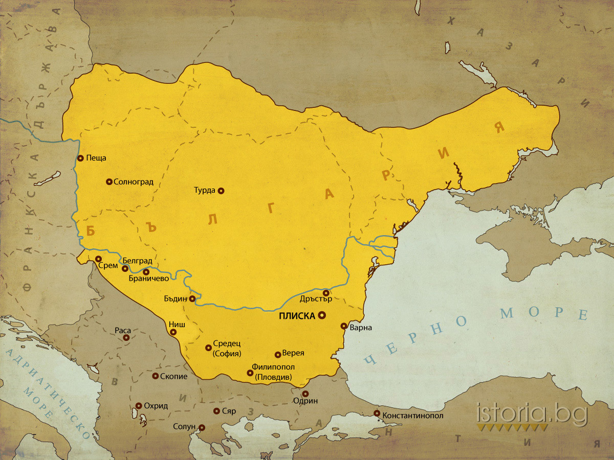
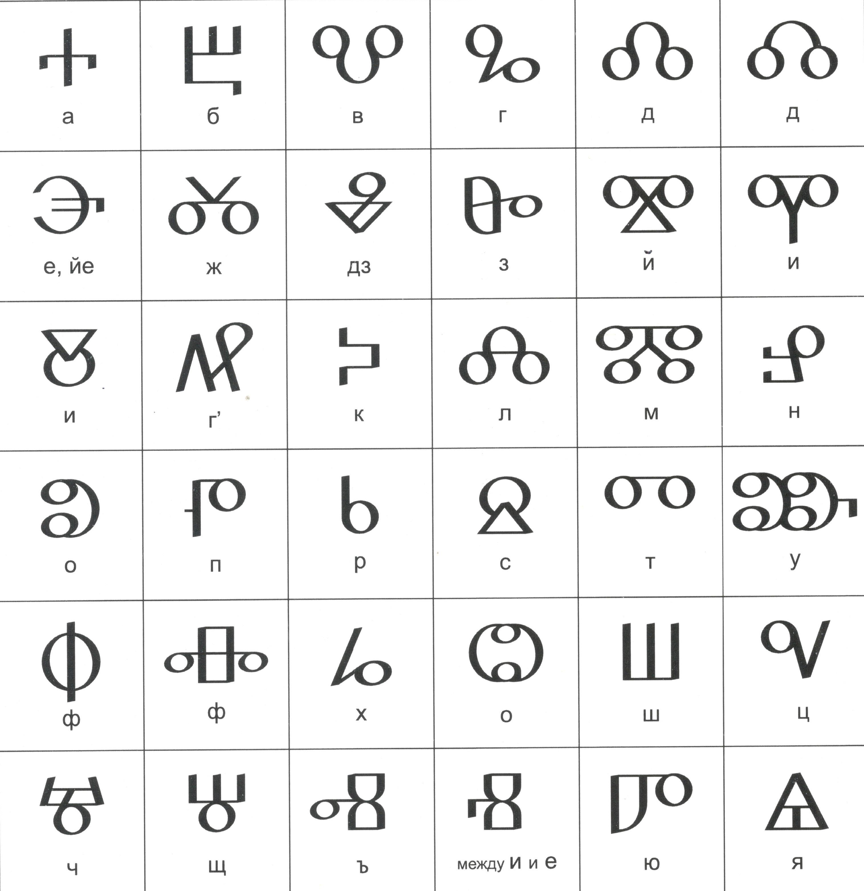

Сан Стефански мирен договор от 03.03.1878 г. между Руската империя и Османската империя.
С него е освободена България. Берлински договор – 31.07.1878 г. – с него са определени
условията за освобождение, което разделя България на две части – Княжество България и
Източна Румелия. След освобождението на чело на България застава Княз Александър Екзарх.
Търнивска конституция
1879
1879
Една година по-късно е издадена Търновската конституция 28.04.1879 г.
Организирането на основните ѝ институции включва и встъпването в длъжност
на първия княз – Александър I на 8 юли 1879 година, и на първото правителство
на Тодор Бурмов на 17 юли 1879 година.
1885
Съединение на България
1885
Съединението – 06.09.1885 г. в Пловдив се обявява съединението на Княжество България
с Източна Румелия противно на решенията на Великите сили на Берлинския конгрес.
В следствие нарушаването на Берлинския договор Русия изтегля всички високопоставени
части, което остава българската армия начело само от капитани във войната със Сърбия.
България печели тази война, макар че Сърбия е ръководена от много по-опитни генерали.
Затова тази битка е наречена “битката на капитаните срещу генералите”.
Независимост на България
1908
1908
На 22.09.1908 г. в град Търново е обявена Независимостта на България.
Отхвърля се политическата и финансова зависимост от Османската империя.
1912
Балканска война / Първа световна

1912
1912 г. България взема участие в Балканската война. Първоначално бележи успехи,
но после претърпява поражение. Участва в Първата световна война, кято започва 1914 г.
но на страната на Централните сили, които биват победени.
България във втората световна война
1941

1941
България по времето на Втората световна война – България спазва неутралитет до 01.03.1941 г.
До периода на съюзяване на страните от Оста до 09.09.1944 г. България е на страната на
Централните сили. След нахлуването на руски военни в България тя се присъединява към съюзниците
до края на войната. Но в края й тя пак се води от губещите държави и трябва да плаща репарации.
По заповед на цар Борис III България е единствената държава, която не изпраща евреите си в
концлагери и така биват спасени 50 000 човешки живота.
1944
Край на Третото българско царство
1944
През 1944 г. на 09 септември се извършва преврат и е свален младият цар Симеон II.
България от царство преминава в дължава с комунистическа форма на управление и биват
забранени всички останали партии.